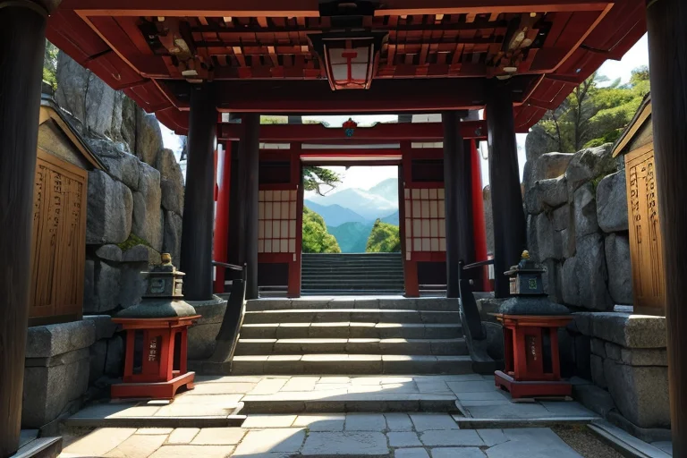
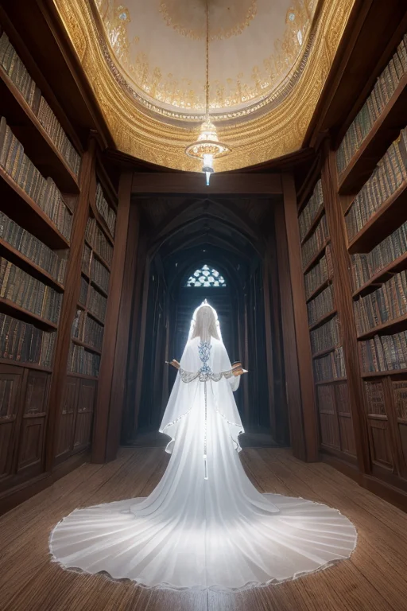
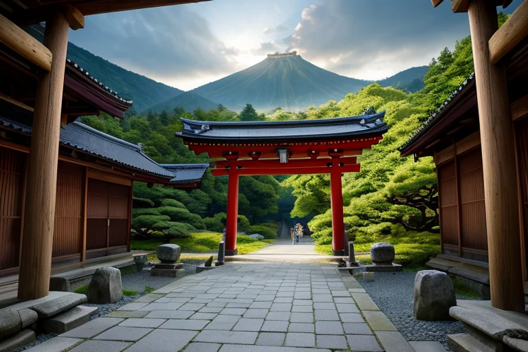
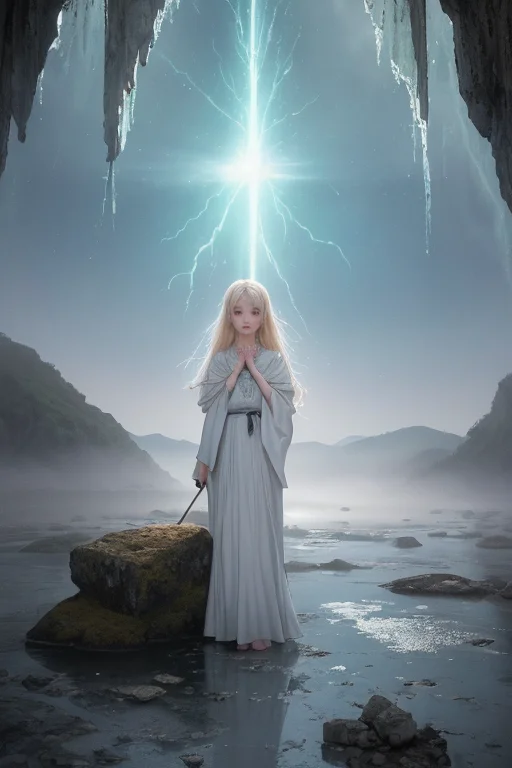
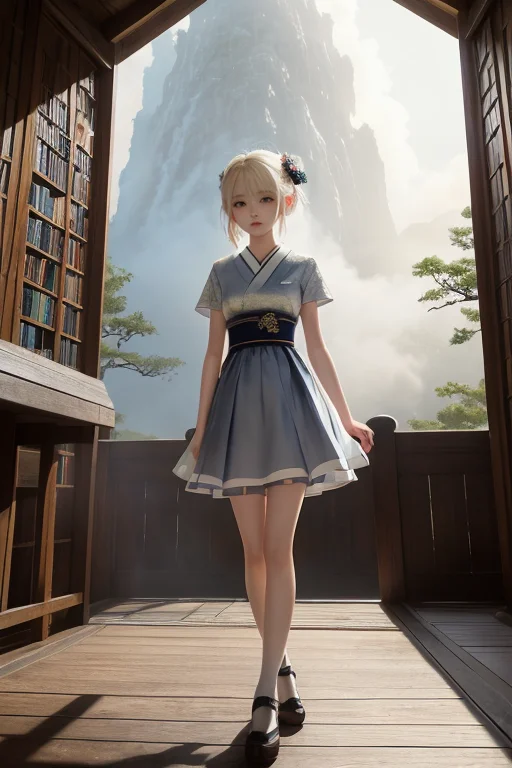

第一章「現実の栃木」
あなたはまだ気づいていない。この土地にも、王がいることを。
日光東照宮の陽明門は、今日も静かに朝日を受けていた。極彩色の彫刻は、訪れる人々のざわめきを吸い込み、四百年の時を沈黙で支えている。そのすぐ裏手、奥社への石段の先には、徳川家康を祀る霊廟がある。歴史の転換点が、ここで石と漆喰に封じ込められたかのようだ。
トチギア・セラフィムは、その霊廟の屋根の上に立っていた。深紫と白の紋章が、彼の胸に微かに光る。彼の目は、東照宮全体を見渡し、さらにその先、栃木県という「土地」そのものの、目には見えない地脈の流れを追っている。歪みは常にある。プレートの圧力は、この霊峰のふもとにも確実に蓄積されていく。
「主君、東北西の結界に、0.3単位の偏りが検出されました」
主席妖精セラフィナの声が、直接、王の意識に響く。感情を持たないはずの彼女の声に、ほんのわずかだが、焦りのようなものが滲んでいた。この土地の、あまりに濃密な「守りたい」という人々の想いが、妖精たちにさえ影響を与え始めている。
トチギアは何も答えず、指をわずかに動かした。地脈の流れを、ほんの少しだけ調整する。大災害を消すことはできない。ただ、崩れる運命の歯車に、砂粒一つ分の抵抗を加えることしか。彼の心に、冷たい問いが去来する。果たして、この石の社を、この土地を、守るべきものの全てと言えるのか。

第二章 歪みの兆候
足利学校の静かな書庫で、トチギアは微かな振動を感知した。それは物理的な揺れではない。歴史の層を流れる、時代の「歪み」の波紋だった。徳川の泰平を願って築かれた日光の社寺の重みが、地脈に沈殿し、時に軋みを生む。それは、過去の「守り」の意志そのものが、現代の地殻に負荷をかけていることを意味した。
「殿下、日光山の結界に乱れが生じています」
セラフィナの報告は、常に事実を淡々と伝える。だが、その背後の霊峰・男体山の気配は、いつになく不安定だった。歴史的建造物の保存という人々の強い想いが、地脈の自然な流れを淀ませ、新たな歪みの種を育てつつあった。
トチギアは目を閉じた。守るべきは、石と木の建造物か。それとも、その下で息づく地脈の均衡か。彼の内側で、初めて「忠誠」という感情が、二つに引き裂かれようとしていた。

第三章 王の葛藤
日光東照宮の陽明門が、歪みの予兆で微かに震えていた。人々はその美しさを守ろうと懸命だ。だが、その想いの重みが、地脈を押しつぶし始めている。トチギアは、足利学校の跡地に立った。ここではかつて、学問という「知」が、時の権力さえも相対化する力を育んだ。
「調整を。」
セラフィナが促す。歴史的建造物を守るため、地脈の自然な変動を抑えるか。あるいは、建造物に若干の損傷を許容し、歪みそのものを解消するか。どちらを選んでも、何かが失われる。
彼は目を開けた。深紫の翼が、静かに広がる。守るべきもの。それは、石や木そのものではない。人々がそこに込めた「持続する意思」、そしてこの土地が悠久の時をかけて育んだ「均衡」そのものだ。両方を完全には守れない。ならば、より長い時の流れに沿う道を。
「地脈を優先せよ。建造物への影響は、最小限に抑えろ。」
声には、初めて決断の重みが滲んだ。忠誠は、時に残酷な選択を伴う。

第四章 妖精との対話
「王よ、その選択は危険です。」
セラフィナの声は、中禅寺湖の水面のように冷たく、澄んでいた。彼女は、日光連山の稜線を背に、深紫の翼を微かに震わせている。足元には、湯葉のように薄く積もった霊気が漂う。
「建造物の損傷は、人々の記憶を、歴史の連続性を傷つけます。日光東照宮の一柱が傾くことすら、数百年の祈りの形を歪めるのです。」
王は、華厳の滝が轟音と共に落ちる谷を見下ろした。水しぶきが、彼の頬を濡らす。
「わかっている。だが、セラフィナ。地脈の歪みをこのまま放置すれば、山そのものが呻く。その時失われるのは、形あるものだけではない。この霊峰が育んできた、目に見えぬ『気』の均衡が、根底から崩れる。」
ニッコラが、いちごの実のような淡い光を放ちながら近づいた。
「学び舎（あしがかがっこう）の昔の学者も言いました。『守るとは、時に古い器を壊し、新たに土を捏ねることなり』と。」
彼女の言葉は、厳格なセラフィナの眉間に、かすかな皺を刻んだ。
「守るべきものは何か。」
王は呟く。答えは出ていた。守るべきは、この土地の悠久の呼吸そのもの。たとえそのために、人々が愛でる形に、ほんの少しの亀裂が入ろうとも。

第五章 微調整と余韻
日光東照宮の陽明門が、朝日に照らされ始めた時、地脈の歪みが頂点に達した。それは、霊峰の怒りとも、歴史の重みの軋みとも言える巨大な圧力だった。王は、中禅寺湖の水面に立つ。セラフィナが結界を、ニッコラが光を、彼女たちの全てを捧げて支える中、彼はただ一つの選択を下す。歪みを解消するためには、華厳の滝の流れを、ほんの一瞬、逆流させねばならない。それは自然の摂理への干渉。代償は大きい。
「許せ。」
王の深紫の翼が広がる。滝の轟音が、一瞬、吸い込まれるように消えた。水面に浮かぶ湯葉が、逆さまに揺れた。その一瞬で、歪みは解消された。代わりに、王の胸に、セラフィナとニッコラの形をした、二つの深い欠落が刻まれた。彼女たちは消え、王国の記憶となった。
足利学校の古い書庫に、一本の羽根が落ちている。誰も気づかぬ、深紫と白の羽根。王は、静かに餃子の街を見下ろす。守るべきものは、変わらない。ただ、守るという行為の重みが、初めて、彼という器を、ひび割れさせただけだ。
あなたの町にも、王がいる。